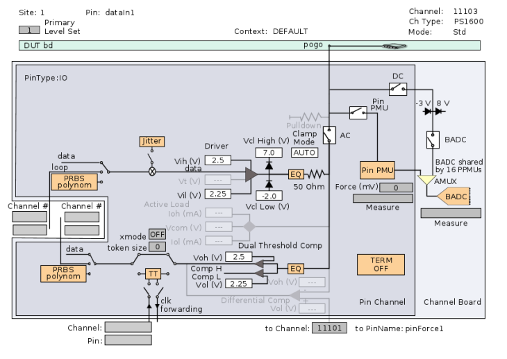

PS1600 hardware overview
The PS1600 card consists of an interface module, a relay module, and eight channel modules. The interface module provides the clock distribution and backplane connections. The relay module carries the eight board ADCs (one per 16 channels).
Channel modules
There are eight 16-channel modules. Each channel module features two eight-channel test processors, a parametric measurement unit (PMU), a driver, a receiver, an active load and shared vector memory for all dual-channels.
The key components on each channel module are:
- Eight dual-channel front-end modules for differential or single ended digital drive and receive, each featuring a dual-threshold comparator, an active load, and a pin PMU per channel.
- Two test processors with 8 cores each:
The two test processors provide one core per channel and form the digital back-end and the timing system.
- Memory:
Each channel module provides 112 MB (PS1600 rev. A) respectively 224 MB (PS1600 rev. B) of dedicated memory per channel.
Logical boards
Each 16-channel module represents one logical board (different to PS9G logical boards). This corresponds to one 16-pin pogo block of the standard pogo cable assembly (8x16 pins).
Front-end
The analog front-end combines two channels. Each channel includes a 3-level driver (Low, High, HI-Z), single-ended comparator, differential comparator, pin PMU, and an active load.
The PS1600 card features a 14 kΩ pull-down resistor per channel which can be enabled to keep the pogo line on 0V level. The pull-down resistor can be controlled by the PS1600 level setup.
In the Hardware view (see Hardware Perspective), a single channel of the PS1600 card is displayed as shown below:

Board ADC
Each channel module contains an 18-Bit board ADC (BADC) for 16 pins. The BADC increases the DC accuracy. The BADC is also supported for static and dynamic high-impedance voltage measurements.
Pin PMU
The pin PMU (PPMU) allows you to do fully parallel value measurements per pin (see PS1600 DC value measurements).
- Generate a fast waveform (PPMU used as an AWG)
- Measure a DC value using successive approximation
Relays
Opening the digitalFrontend virtual relay (see the instrument view above), disables the driver and the active load circuitry. The receiver, however, may still be connected to the DUT and you may be able to observe the received signal, even if the digitalFrontend relay is open.
Do not connect a PS1600 pogo pin directly to an active resource like DPS128 or AVI64. Even in a disconnected state, current can flow through a channel via the pull-down resistor. In case current flows into the disconnected pin, the differential pair pin will be affected.
We strongly recommend connecting a PS1600 channel via a relay to an active resource.
Functional changes
- Introduced in SmarTest 7.1.0
- SmarTest 7.3.2: Support of PS1600B